10 Agent planning and tool connections
Chapter 9 established controlled tool use and final-state evaluation in application code. Planning, shared tool connections, and retrieval recovery extend that foundation. A simple sequential loop is not always optimal. Some tasks benefit from an adaptive plan, a dependency graph, or code execution. Planner selection follows task structure, uncertainty, dependency latency, and parallelism.
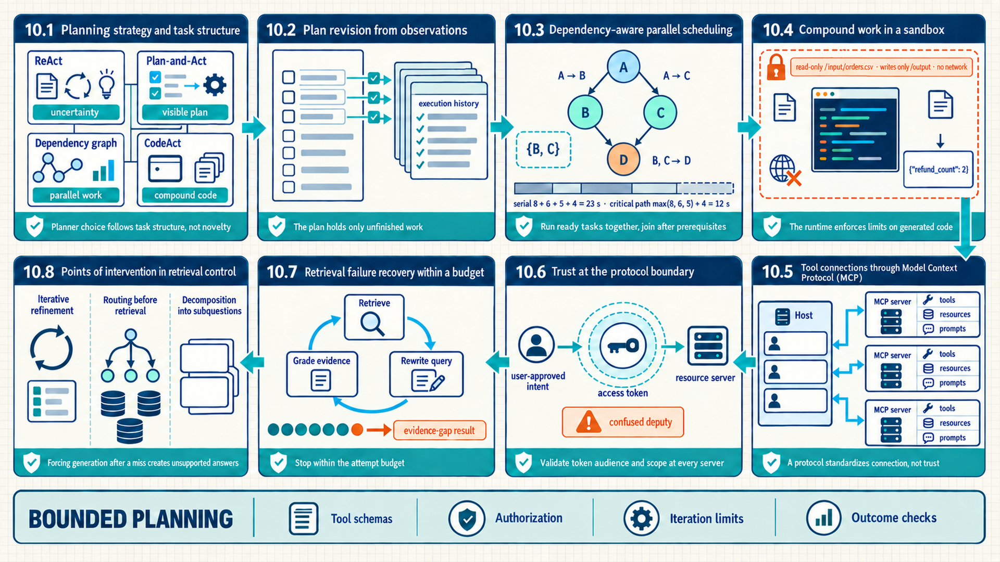
The map compares stepwise action, explicit plans, dependency graphs, and sandboxed code. It then separates MCP connections from consent, scopes, and credentials, and shows retrieval recovery stopping within an explicit budget.
10.1 Planning strategy and task structure
A planner is the policy that converts a goal and current state into executable next steps. Planner alternatives are not successive maturity levels. Instead, they express different assumptions about uncertainty, dependencies, parallelism, and the value of executable code.
- Planner: The component responsible for action selection, dependency ordering, and stopping criteria.
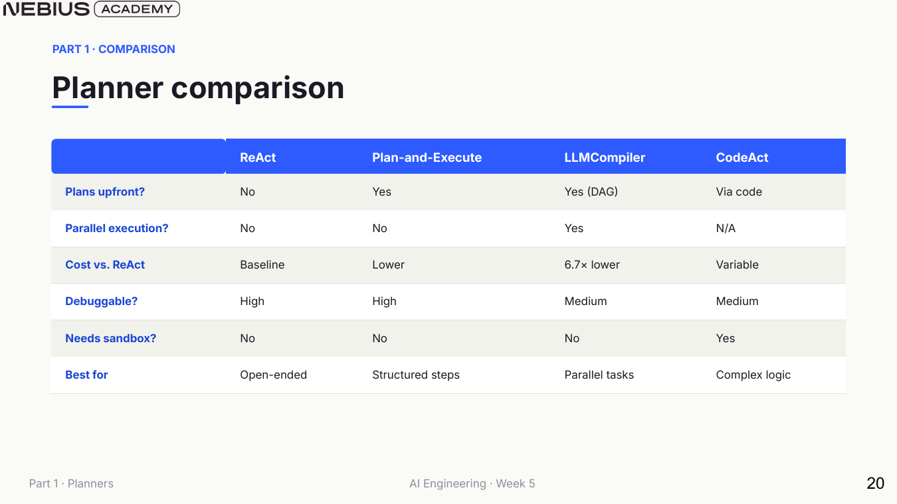
The useful question is not which planner sounds most advanced. It is which control-flow assumption matches the task while preserving a bounded execution layer.
Comparing planners requires evaluating their control flow, task suitability, and primary failure modes:
| Planner | Control structure | Best fit | Primary cost or risk |
|---|---|---|---|
| ReAct | One action after each observation | Exploratory tasks and uncertain scope | Sequential latency, token use, and loop risk |
| Plan-and-Execute | Create a full plan, then execute its steps | Stable tasks where the plan can be reviewed before action | Stale plans when observations invalidate later steps |
| ReWOO | Create variable-linked tool work before observations return | Reusable tool plans with explicit intermediate dependencies | Unresolved variables and weak recovery from failed steps |
| Reflexion | Store evaluator feedback between attempts | Tasks with informative, trustworthy feedback | Retry cost and evaluator-driven error reinforcement |
| Plan-and-Act | Plan, execute one step, then revise remaining steps | Clear phases whose details change with observations | Planner call and plan-drift surface after each step |
| LLMCompiler | Stream a dependency graph and dispatch ready nodes | Independent subtasks with a merge step | Dependency correctness and harder traces |
| CodeAct | Emit executable code as the action | Loops, data transformation, and library composition | Untrusted-code execution requires isolation |
An upfront plan is inspectable but needs an explicit invalidation path. Plan-and-Solve is one plan-first prompting method. It does not define a complete production Plan-and-Execute architecture.1 ReWOO replaces immediate observations with named variables, which can expose reusable dependencies but delays error discovery.2 Reflexion uses an evaluator’s critique as state for another attempt, so its value depends on feedback quality and a strict retry budget.3 Plan-and-Act revises after each observation, occupying the middle ground between a static plan and fully incremental ReAct.
Selection rule
Use ReAct as the simple default when the next useful action depends strongly on the latest observation.
Add explicit planning only when the plan itself provides value: auditability, cheaper execution, parallelism, or coordination.
Do not let a more elaborate planner bypass the tool schemas, authorization gates, iteration limits, or outcome checks established in Chapter 9.
10.2 Plan revision from observations
The default agent loop already replans implicitly after every observation. A separate plan becomes useful when the product needs visible remaining work, a stronger planning model, or a cheaper execution model. Planning can remain implicit in each step or become persistent state that the application revises.
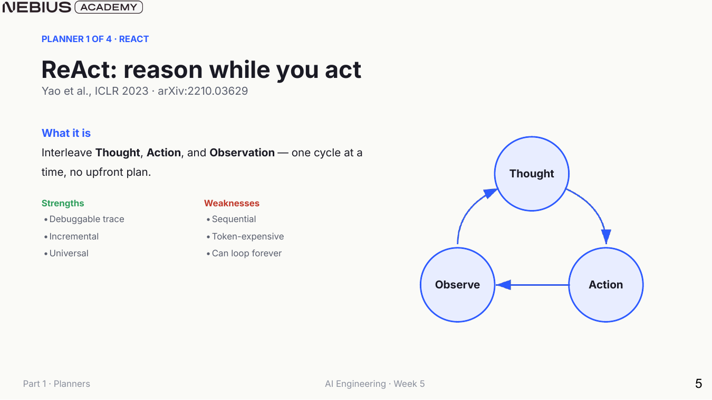
Incremental control makes ReAct adaptable and easy to inspect, but its serial loop needs a hard maximum and an explicit stopping condition.
ReAct
This method applies to goals for which the next action is uncertain until the latest tool result is observed. It is useful when the search space is exploratory, the tool set is focused, and frequent adaptation matters.
The model selects a typed action, and the application executes it. The application adds the resulting observation to state before the model makes the next decision. This is the minimal general loop and the baseline for adding explicit planning.
A limit to keep in mind: serial tool calls, repeated reasoning tokens, tool-selection errors, and infinite-loop risk without a step budget
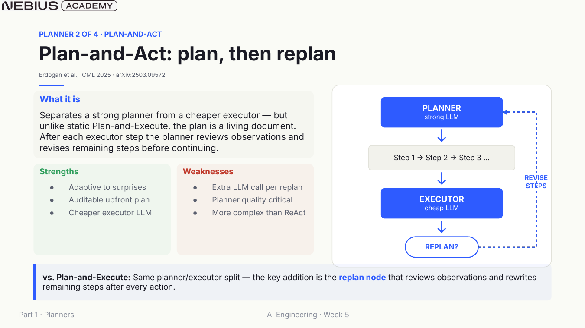
The replan node is the defining addition. A static plan-and-execute system cannot absorb newly discovered constraints without a separate correction path.
The following replanner applies this distinction between remaining work and a final response.
This abbreviated Python example assumes that state has the fields read below and that objective_satisfied, compose_answer, and revise_using are supplied by the application. It returns a Plan or Response. A malformed state should be rejected before this replanner runs.
Code example: A replanner returns either remaining work or a final response.
from dataclasses import dataclass
@dataclass
class Plan:
steps: list[str]
@dataclass
class Response:
response: str
def replan(state) -> Plan | Response:
if objective_satisfied(state):
return Response(response=compose_answer(state))
remaining = revise_using(
objective=state.objective,
original_plan=state.original_plan,
completed=state.past_steps,
observations=state.observations,
)
return Plan(steps=remaining)Plan-state invariant
The plan should contain only unfinished work. Completed steps and their observations belong in execution history, and the final response should be produced only when the objective and policy checks pass.
10.3 Dependency-aware parallel scheduling
Plan-and-Act stores remaining work as a sequence. The sequence forces even independent tasks to run one after another, which can increase wall-clock time. A dependency graph makes independence explicit, schedules ready tasks concurrently, and joins results after their prerequisites finish.
- Task DAG: A directed acyclic graph whose nodes are executable tasks and whose edges state that one task depends on another task’s output.
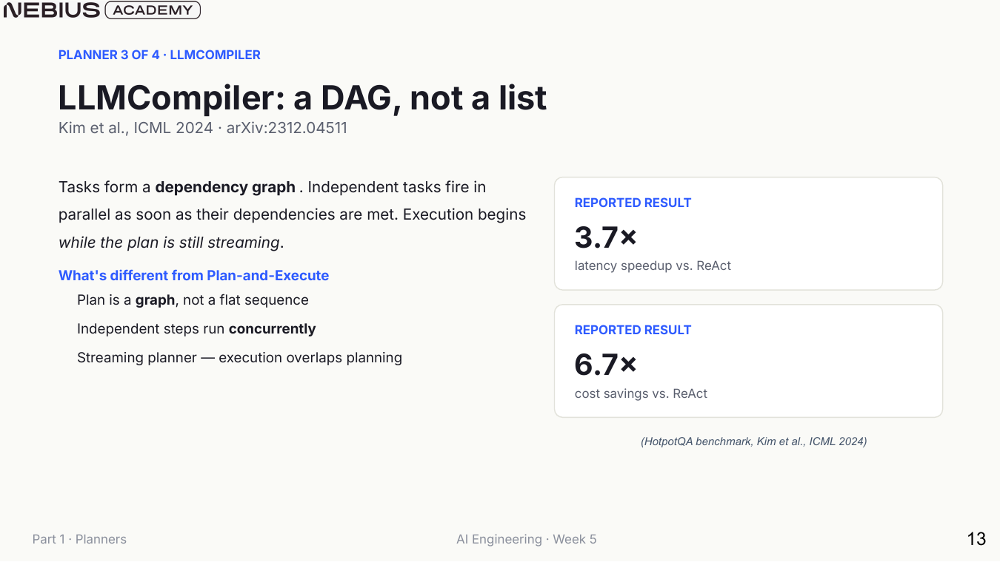
LLMCompiler reports speed and cost improvements from planning function calls as a dependency graph.4 Those results are specific to the cited study, not universal guarantees. The transferable mechanism is dependency-aware scheduling.
Let \(G\) be the task graph, let \(\pi\) be one dependency-respecting path through it, and let \(t_v\) be the duration of task \(v\). Even with unlimited workers, the graph cannot complete sooner than its longest dependency path:
\[ T_{DAG}\ge\max_{\pi\in\mathrm{paths}(G)}\sum_{v\in\pi}t_v \tag{10.1}\]
The maximum ranges over all paths in \(G\), while the summation adds task durations along one path. This is a lower-bound latency model. Scheduling overhead, resource contention, retries, and the final join add time in production.
Example calculation: Critical path versus serial execution
Three independent document summaries take 8, 6, and 5 seconds. A final synthesis depends on all three and takes 4 seconds.
1. Serial execution takes 8 + 6 + 5 + 4 = 23 seconds before overhead. 2. In a dependency graph, the three summaries can start together. 3. The longest prerequisite path is max(8, 6, 5) + 4 = 12 seconds. Result: The idealized graph reduces the dependency-limited time from 23 seconds to 12 seconds.
Interpretation: The gain exists because the summaries are independent. Mislabeling a real dependency can make the faster schedule produce an invalid result.
The scheduler needs a concrete rule for determining which unfinished nodes may run at scheduler time t.
\[ \mathrm{Ready}(t)=\{v:v\notin\mathrm{Done}(t),\mathrm{Pred}(v)\subseteq\mathrm{Done}(t)\} \tag{10.2}\]
Here, \(\operatorname{Done}(t)\) denotes completed nodes, while \(\operatorname{Pred}(v)\) represents predecessor nodes. The expression selects unfinished nodes whose predecessors are finished. Readiness proves dependency completion only. Authorization, rate limits, and safe concurrency require independent checks.
Example calculation: Ready nodes after one dependency completes
A graph contains A -> B, A -> C, and both B and C -> D. Only A is complete.
1. B’s predecessor set is {A}, which is contained in Done(t). 2. C’s predecessor set is also {A}, which is contained in Done(t). 3. D requires both B and C, so D is not ready. Result: The ready set contains B and C, allowing them to run concurrently.
Interpretation: The scheduler exposes parallelism already present in the dependency graph. It cannot safely invent independence that the plan did not establish.
The following loop turns dependency readiness into a dispatch rule.
This abbreviated Python loop assumes task objects with id and dependencies, an initially empty results mapping, and an application-supplied run_in_parallel. It returns the joiner’s answer and raises InvalidPlan when no unfinished task is runnable.
Code example: A scheduler dispatches only tasks whose dependencies are satisfied.
def ready_tasks(tasks, results):
return [
task for task in tasks
if task.id not in results
and all(dep in results for dep in task.dependencies)
]
while len(results) < len(tasks):
batch = ready_tasks(tasks, results)
if not batch:
raise InvalidPlan("cycle, missing dependency, or failed prerequisite")
results.update(run_in_parallel(batch, results))
answer = joiner(results)The abbreviated loop reports one InvalidPlan outcome, but a full scheduler must keep three causes separate. Plan validation rejects a dependency ID that refers to no task. A cycle check rejects a graph with no task ready to run. A task whose prerequisite failed enters a typed blocked or failed state, and its dependents are cancelled or blocked according to policy. These outcomes require different repairs and should remain distinct in the trace.
Graph evaluation
Test dependency correctness, peak concurrency, critical-path latency, joiner faithfulness, cancellation, and partial failure. An end-answer score alone cannot reveal whether apparent speed came from skipping required work.
The graph must also declare which resources each task reads and writes, how cancellation is propagated, and what the join step requires. An undeclared side effect can make two apparently independent nodes conflict. Keep a sequential reference run for comparison until tests show that the parallel schedule preserves the required state and result.
10.4 Compound work in a sandbox
Typed function calls are effective when each action maps cleanly to one bounded capability. Loops, conditionals, local variables, and library composition can require many separate calls and observations. CodeAct compresses that procedural work into executable code, but this expressiveness moves isolation and resource policy to the center of the design.5
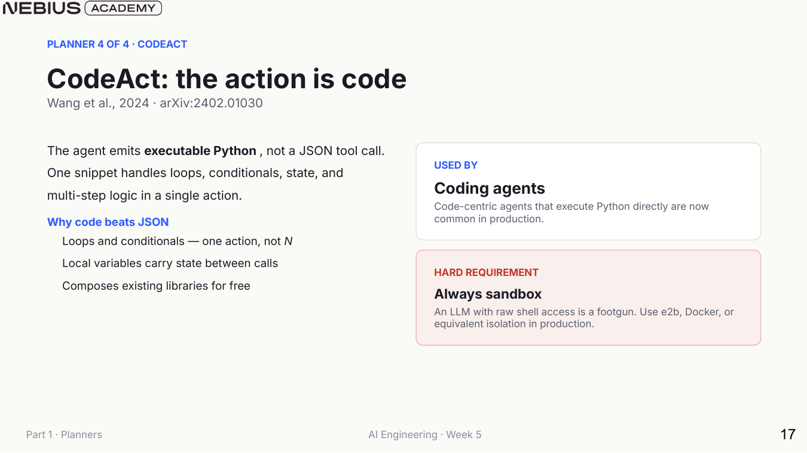
The hard requirement is isolated execution with a deliberately small capability set. The generated program is untrusted input even when the model is normally reliable. The NIST Application Container Security Guide explains container isolation and its limits.6 A container alone does not prevent every kernel escape, secret exposure, unsafe mount, network path, resource attack, or harmful use of accepted output.
CodeAct
This method applies to computational subtasks expressible as code over explicitly mounted data and approved libraries. It is useful when a compact program replaces many repetitive tool calls or performs deterministic data analysis.
The model writes a program, an isolated runtime enforces time, memory, network, filesystem, and output limits, and captured results return as an observation. Code is a powerful action language, but it is safe only when the executor supplies a deliberately small capability envelope.
A limit to keep in mind: sandbox escape vulnerabilities, nondeterministic dependencies, oversized outputs, covert side effects, and complex policy audits
| Sandbox control | Question it answers | Example policy |
|---|---|---|
| Filesystem | What may the program read or write? | Read-only input mount and a writable temporary output directory only |
| Network | Which external systems may it contact? | Disabled by default or restricted to an allowlist |
| Resources | How much compute can it consume? | Wall-time, CPU, memory, process, and output-size limits |
| Secrets | Which credentials are visible? | No ambient credentials, only short-lived scoped tokens |
| Artifacts | How are outputs accepted? | Artifact type, size, malware-risk, and destination validation |
Example: A sandbox accepts one program and blocks another
Assume the runtime mounts a read-only /input/orders.csv, permits writes only under /output, and disables network access. An allowed program reads three intent values and counts the two get_refund rows. It writes {"refund_count": 2} to /output/result.json. The runtime returns exit status 0 and the output-file reference. The host then checks the file shape before using the count.
A second program tries to make an HTTP request. The sandbox rejects that call because network access is disabled, returns a policy error, and produces no network side effect. The trace records the program, mounted paths, limits, exit status, and accepted or rejected output. These are expected outcomes under the stated policy, not a claim that the programs were run for this book.
The sections above separated planning from the controlled execution of each ready action. Capabilities may still live in different processes or services and need a common way to describe and call them. Model Context Protocol (MCP) specifies the messages for that exchange. It is a protocol, meaning rules for the messages and their order, not a server library or an authorization system. The host, server, and downstream service still check consent, identity, authorization, validation, and source information.
10.5 Tool connections through Model Context Protocol (MCP)
The planners above can all call ordinary in-process functions. When multiple hosts and multiple capability providers evolve independently, custom adapters create an N x M integration burden. With MCP, a host receives a server’s list of tools, resources, and prompts, then invokes a selected tool using a shared message format. Software that sends and receives those messages is an MCP implementation. The protocol does not decide whether a particular caller may use a tool or whether a proposed action is safe.
- Model Context Protocol (MCP): A client-server protocol that lets an AI host discover and invoke server-provided tools, resources, and prompt templates through shared message formats.
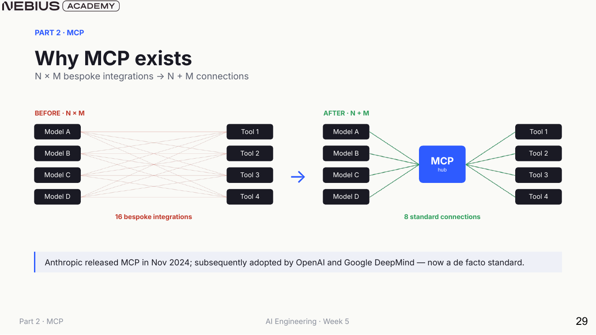
For N hosts and M services, the integration topology can move from N x M custom adapters toward N + M protocol implementations. Operations, authentication, and semantics still need clear responsibility.
The host is the application that manages model interaction and the user trust boundary. It creates a client session for each server. A server exposes capabilities backed by a database, API, filesystem, or other system. In a simple discovery exchange, the host requests available tools and the server returns each tool’s name, input schema, and description. The host then checks that server and tool against its own policy before exposing the tool to the model or presenting a user-approval request. Local stdio transport runs the server as a local process and avoids a network connection. A remote transport needs explicit authentication, authorization, and connection handling.
- Confused deputy: A security failure in which software with legitimate authority is tricked into using that authority for a caller or purpose that was not approved. The table below lists this risk for tools. Section 10.6 explains the corresponding audience, resource, scope, and user-intent checks.
| Primitive | Controller | Purpose | Typical risk |
|---|---|---|---|
| Tool | Model chooses, and the host authorizes | Perform a typed action that may have side effects | Confused-deputy action or excessive permissions |
| Resource | Application or host | Read identified data into context | Sensitive-data exposure or prompt injection |
| Prompt | User chooses through the host | Invoke a server-supplied interaction template | Misleading scope or stale instructions |
| Sampling | Server requests, and the host mediates | Ask the host model to perform a completion | Unexpected model use, cost, or data flow |
| Roots | Host advertises | Tell a server the relevant filesystem or URI roots | An overly broad scope increases possible harm, and access control remains separate |
| Elicitation | Server requests, and the user answers | Obtain missing information during execution | Social engineering or ambiguous consent |
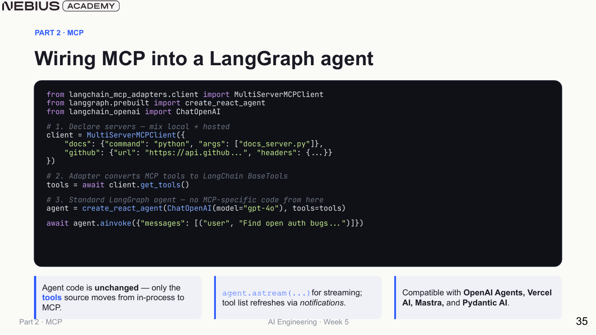
The agent loop need not change when the transport changes. That separation is useful only if tool identity, permissions, errors, and source information remain visible in traces.
The next example filters discovered tools before creating the agent.
This abbreviated async Python example assumes an authenticated client, a policy object, and an application-supplied create_agent. It returns an agent restricted to allowed discovered tools. Discovery or policy failures stop construction rather than yielding an unrestricted agent.
Code example: A host keeps capability discovery separate from agent execution.
async def build_agent(client, model):
discovered = await client.get_tools()
allowed = [
tool for tool in discovered
if policy.allows_server(tool.server_id)
and policy.allows_schema(tool.name, tool.input_schema)
]
return create_agent(model=model, tools=allowed)FastMCP is a Python library for writing an MCP server. It is an implementation aid, not the MCP protocol itself. In this example, its decorator reads a Python function’s parameters and type annotations to create a JSON input schema.7 That schema can reject an argument with the wrong shape before the function runs, but it does not decide which records the function may read or which changes it may make.
This abbreviated server example assumes the three stores and search helper enforce their own access rules. It returns allowlisted records, bounded search results, or a draft. Access failures must be returned as typed tool errors. The application alone may submit a draft after approval.
Code example: 10.1: FastMCP exposes support tools while keeping approval checks in the application.
from fastmcp import FastMCP
mcp = FastMCP(name="support-tools")
@mcp.tool
def lookup_ticket(ticket_id: str) -> dict:
# Return allowlisted fields for one support ticket.
return ticket_store.read_public(ticket_id)
@mcp.tool
def search_policy(query: str, top_k: int = 4) -> list[dict]:
# Search approved policy documents without executing their text.
bounded_k = min(max(top_k, 1), 8)
return policy_search(query, top_k=bounded_k)
@mcp.tool
def draft_escalation(ticket_id: str, reason: str) -> dict:
# Create a draft; submission still requires human approval.
return escalation_store.create_draft(ticket_id, reason)The decorator exposes schemas and documentation, while the underlying functions retain the source system’s access policy. lookup_ticket returns allowlisted fields, search_policy bounds result count, and draft_escalation deliberately cannot submit. Record the FastMCP package version and the MCP protocol version used by the server because both can change over time.
10.6 Trust at the protocol boundary
A standard protocol makes a connection consistent, but it does not make the connected server or its outputs safe. Tool descriptions and returned documents are untrusted data. A malicious document can contain instructions intended to redirect the model, and an overly broad credential can let an otherwise valid call perform actions the user did not permit.
Securing the protocol boundary requires defenses against injection, privilege escalation, and unverified execution. Host applications defend against prompt injection by tagging retrieved tool outputs as untrusted text and isolating them from system policy prompts. The host also restricts tool execution to explicit user consent, verified caller identity, and minimal permission scopes. These checks reduce the chance that software will misuse its authority for a different caller or purpose, the confused-deputy problem defined in Section 10.5.8
Consequential actions, including file deletions, financial transfers, and durable state changes, demand explicit human approval before execution. Credentials should follow the principle of least privilege. In protocol versions that provide roots, roots communicate relevant filesystem scope but do not enforce access control or create a sandbox. The host must still restrict actual file access and use short-lived, resource-scoped credentials rather than system-wide secrets. Teams should also pin server package versions to control supply chain risk and record tool discovery, arguments, approvals, and outcomes in an audit trail.
Dated supplement: MCP transport and authorization rules (MCP 2025-11-25)
The versioned MCP 2025-11-25 specification lists stdio and Streamable HTTP as standard transports.9 A local stdio client launches the server process and exchanges newline-delimited JSON-RPC messages. JSON-RPC is a request and response message format encoded as JSON. Streamable HTTP uses an HTTP endpoint and needs origin validation, authentication, and careful session handling. The transport changes network exposure and credential handling, not what a tool means or whether the host should permit the action.
Four actors and one credential make the authorization flow easier to follow:
- User or resource owner: The person who grants permission.
- Client: The MCP client acting for the AI host that asks to use a capability.
- Authorization server: The system that verifies the user and issues a limited credential.
- Access token: The credential that grants limited access.
- Resource server: The MCP server that checks the token before serving the requested capability.
For HTTP authorization, the MCP 2025-11-25 specification uses OAuth-based authorization.10 OAuth is a way for a user to let a client call a service with a limited token instead of sharing the user’s password. The client asks for a token intended for one MCP server, and that server checks that the token’s audience identifies it. An MCP proxy must not pass the received client token unchanged to a downstream API, because that API is a different recipient. The proxy obtains a separate token for the downstream API instead.
PKCE, short for Proof Key for Code Exchange, protects an authorization-code flow. Before the user signs in, the client creates a secret verifier and sends only a derived challenge. After the authorization server returns a code, the client must present the original verifier to exchange the code for a token. A copied code is therefore not enough for an attacker to obtain the token. Audience checks, short-lived tokens, PKCE where an authorization-code flow is used, and per-client consent reduce the chance that a server uses a user’s authority for a different action.
The audience rule follows RFC 8707 Resource Indicators,11 and the verifier and challenge flow follows RFC 7636.12 These standards support the authorization mechanisms, while the application still decides whether the requested action matches the user’s approved intent.
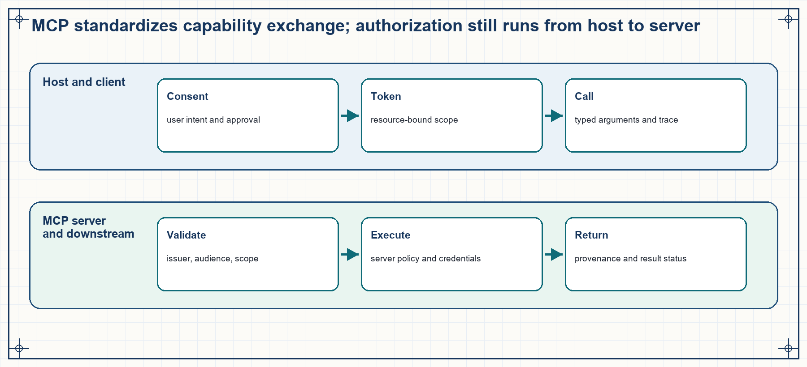
A valid protocol message does not prove that the requested action is authorized. The host binds a user-approved intent to a resource-scoped token, and each server validates and executes with its own policy and credentials.
Dated supplement: elicitation and consent (MCP 2025-11-25)
The MCP 2025-11-25 elicitation specification lets a server request missing information from the user through the host.13 In form mode, a server sends elicitation/create with a response schema. The host identifies the requesting server, displays the requested fields to the user, and returns an accept, decline, or cancel response.
The host must authenticate requesting servers, clarify needed inputs, allow user cancellation, and validate response schemas.
Form mode is appropriate for ordinary structured information. URL mode can direct a sensitive interaction to an external page, but the host still needs to bind that interaction to the authenticated user and show the user which server requested it.
Current comparison: MCP 2026-07-28
The MCP 2026-07-28 specification defines stateless, self-contained requests and negotiates capabilities for each request.14 Its HTTP authorization specification remains optional and transport-specific.15 A stdio server obtains credentials from its environment rather than this HTTP flow. The current roots specification marks roots as deprecated and continues to describe them as scope information, not access control.16 Keep the 2025-11-25 examples above when implementing that version, but do not present their details as timeless protocol behavior.
After those protections are specified, the remaining choice is whether the protocol solves a real sharing boundary:
| Direct tools are appropriate when… | MCP is appropriate when… |
|---|---|
| One application manages the tools in the same repository. | Capabilities must be shared across multiple hosts or agent frameworks. |
| Latency and end-to-end traces are critical. | Servers cross team, process, machine, or vendor boundaries. |
| Schemas and implementation change together. | Independent discovery, versioning, and capability lifecycle have real value. |
| The integration count is small and explicit. | The pairwise N x M integration problem is already measurable. |
Chapter 7 localized RAG failures by checking retrieved evidence, claim support, and answer relevance. The planning and protocol sections above added controlled tool use and clear boundaries. A fixed retrieval pass can still stop too early when its first query or method misses necessary evidence. Agentic retrieval introduces a recovery loop that checks whether the evidence is sufficient and changes the query or retrieval method. The loop stops on success or when its budget is exhausted.
10.7 Retrieval failure recovery within a budget
Planning and MCP have defined how an agent chooses and invokes bounded capabilities. One-shot retrieval still stops after the first query even when its evidence is visibly insufficient. Agentic retrieval adds a capped inspect-rewrite-retrieve loop and chooses the retrieval representation that matches the information need.
One-shot RAG assumes the user’s first query is a good retrieval query and that one retrieval pass returns enough evidence. Vague language, multi-hop questions, corpus mismatch, and ambiguous entity names break that assumption. Agentic RAG places a controlled decision loop between the question and the retriever so the system can route, inspect, rewrite, decompose, and stop.
- Agentic RAG: A retrieval-augmented system in which an agent chooses and iterates retrieval actions from observations, within a bounded recovery loop.
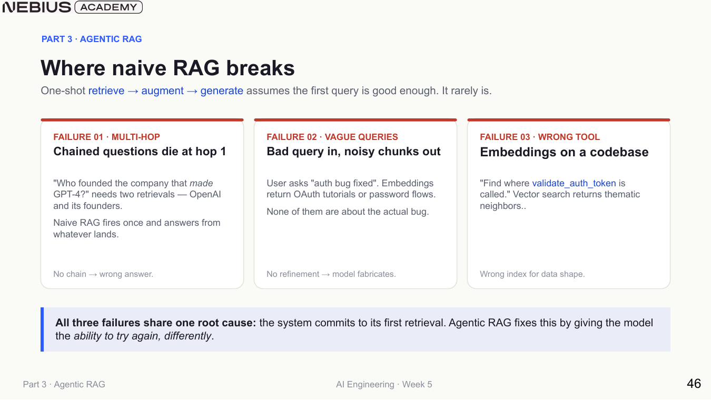
The missing capability is not necessarily a larger embedding model. It is a recovery path that can recognize insufficient evidence and change the next retrieval action.
Iterative retrieval
This method applies to queries whose first retrieval may be noisy, incomplete, or expressed with the wrong vocabulary. It is useful when the system can cheaply inspect relevance and try a bounded number of refined searches.
The pipeline retrieves candidates and inspects their evidence quality. When the evidence is insufficient, it reformulates the query while preserving named entities, dates, user constraints, and access scope. It generates an answer only after meeting the stop criteria. IRCoT and FLARE report gains from iterative retrieval on their studied tasks.1718 Each additional attempt still adds latency, cost, grader error, and query-drift risk.
A limit to keep in mind: increased query latency, evaluation grader inaccuracies, query drift during reformulation, and unbounded loop execution
The retriever itself is a product choice. Exact search is often strongest for symbols, identifiers, error strings, and rapidly changing code. BM25 fits keyword-rich corpora. Embeddings help with conceptual paraphrases and cross-language similarity. SQL or an API should answer structured filters and aggregates directly. Agentic control does not erase those differences. Instead, it selects among them.
| Retriever | Signal | Strength | Failure to watch |
|---|---|---|---|
| Exact search | Literal or regular-expression match | Precise symbols, IDs, logs, code, and fresh text | Low recall when wording changes |
| BM25 | Weighted lexical overlap | Keyword-rich documents without dense-index complexity | Vocabulary mismatch and weak semantics |
| Dense retrieval | Vector similarity | Conceptual or paraphrased questions | Plausible but irrelevant neighbors and index staleness |
| SQL or API | Typed fields and operators | Counts, filters, joins, and authorized live state | Invalid query generation or excessive access |
10.8 Points of intervention in retrieval control
Chapter 7 separated retrieval relevance from answer faithfulness. The next design question is where control should intervene when evidence is missing. Iterative refinement retries one route, routing selects a route before retrieval, and decomposition creates multiple evidence subproblems.
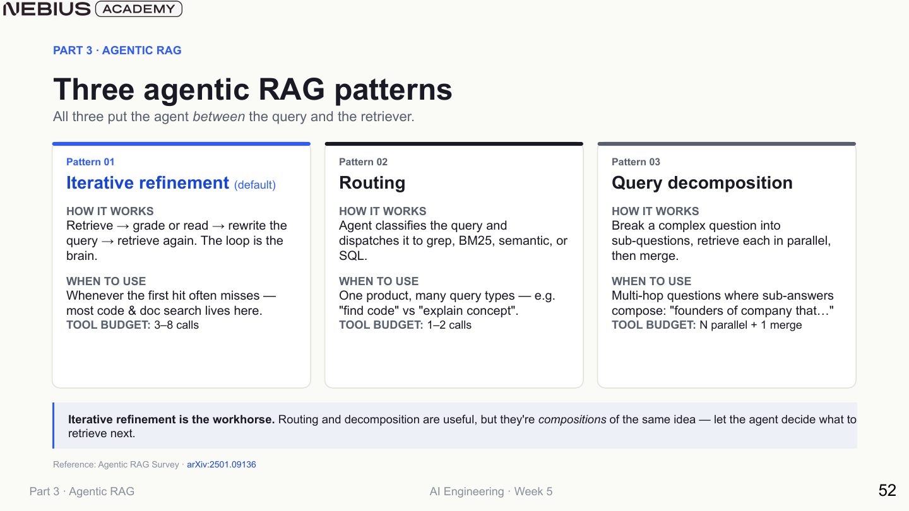
The patterns may be composed, but each additional branch or loop needs its own budget, state, and evaluation slice. Stop with an evidence-gap result when another attempt cannot add authorized evidence. Do not broaden identity, date, or access constraints merely to obtain a result.
| Pattern | Decision | Good trigger | Required evaluation |
|---|---|---|---|
| Iterative refinement | Are current results sufficient? If not, how should the query change? | First-hit misses, vague phrasing, changing terminology | Attempts, recovery rate, drift rate, latency, and supported-answer rate |
| Routing | Which evidence system should answer this query? | Distinct semantic, exact, structured, or policy corpora | Route accuracy, fallback behavior, per-route quality, and access policy |
| Decomposition | Which subquestions and dependencies produce the answer? | Multi-hop or comparison questions | Subanswer correctness, dependency validity, merge faithfulness, and total cost |
The final example makes the retrieval budget part of the state machine.
This abbreviated Python example assumes the retriever, grader, and rewrite helper are application-supplied. Each state machine node returns updated state. A grade must be recorded before rewriting begins. When budgets exhaust, the machine returns an evidence gap rather than generating unsupported text.
Code example: A bounded iterative-retrieval state machine.
def retrieve_step(state):
docs = retriever_for(state.route).search(state.query)
return state.add_attempt(query=state.query, docs=docs)
def grade_step(state):
verdict = evidence_grader(state.question, state.latest_docs)
return state.with_latest_grade(verdict)
def route_after_grade(state):
if state.latest_grade.sufficient:
return "generate"
if state.attempts >= state.max_attempts:
return "insufficient_evidence"
return "rewrite"
def rewrite_step(state):
return state.with_query(
rewrite_using_failure_reason(
original=state.question,
previous=state.query,
reason=state.latest_grade.reason,
)
)Stopping is part of retrieval quality
When the evidence budget is exhausted, the correct output may be an evidence-gap response. Forcing generation after a miss converts a retriever limitation into an unsupported answer.
Chapter checkpoint
Choose a planner from the task’s dependency structure and uncertainty, not from novelty. Use MCP when standardized sharing solves a real integration boundary. Keep authorization and outcome checks outside the protocol. Agentic RAG adds bounded recovery to retrieval, but it requires strict attempt budgets to prevent open-ended search loops.
Wang, L., Xu, W., Lan, Y., Hu, Z., Lan, Y., Lee, R. K.-W., & Lim, E.-P. (2023). Plan-and-Solve prompting: Improving zero-shot chain-of-thought reasoning by large language models. In Proceedings of ACL 2023. https://arxiv.org/abs/2305.04091. Retrieved September 16, 2026. The method first generates a plan and then executes its steps. It supports plan-first reasoning, not the chapter’s complete production planner architecture.↩︎
Xu, B., Peng, Z., Lei, B., Mukherjee, S., Liu, Y., & Xu, D. (2023). ReWOO: Decoupling reasoning from observations for efficient augmented language models. arXiv. https://arxiv.org/abs/2305.18323. Retrieved September 16, 2026. ReWOO separates planning from tool observations and binds outputs through variables. Its results do not establish every operational trade-off described here.↩︎
Shinn, N., Cassano, F., Berman, E., Gopinath, E., Narasimhan, K., & Yao, S. (2023). Reflexion: Language agents with verbal reinforcement learning. arXiv. https://arxiv.org/abs/2303.11366. Retrieved September 16, 2026. Reflexion retains linguistic feedback in episodic memory for later trials. Its usefulness depends on task and feedback quality, and it does not supply the chapter’s retry policy.↩︎
Kim, S., Moon, S., Tabrizi, R., Lee, N., Mahoney, M. W., Keutzer, K., & Gholami, A. (2023). An LLM compiler for parallel function calling. arXiv. https://arxiv.org/abs/2312.04511. Retrieved September 16, 2026. The work represents function calls as a dependency graph and dispatches ready work in parallel. Its speed and cost results do not guarantee gains for a different task graph or tool set.↩︎
Wang, X., Chen, Y., Yuan, L., Zhang, Y., Li, Y., Peng, H., & Ji, H. (2024). Executable code actions elicit better LLM agents. arXiv. https://arxiv.org/abs/2402.01030. Retrieved September 16, 2026. The paper uses executable code as an action representation and reports task results. It does not establish the containment rules in this chapter.↩︎
National Institute of Standards and Technology. (2017). Application container security guide (NIST Special Publication 800-190). https://doi.org/10.6028/NIST.SP.800-190. Retrieved September 16, 2026. The guide describes threats and countermeasures across images, registries, orchestrators, containers, and hosts. It treats isolation as one layer, not complete containment.↩︎
Prefect. (2026). FastMCP tools documentation (commit
0792ac81). GitHub. https://github.com/PrefectHQ/fastmcp/blob/0792ac812c3240a8256d44fbbc01caa97e4cb8cc/docs/servers/tools.mdx. Retrieved September 16, 2026. This fixed documentation version shows tool registration and schema creation from Python types. It does not provide authorization for the registered function.↩︎Model Context Protocol. (2025, November 25). Security best practices. https://modelcontextprotocol.io/docs/2025-11-25/tutorials/security/security_best_practices. Retrieved September 16, 2026. The guidance covers consent, authorization, token handling, and confused-deputy defenses for that edition. It does not prove that one control blocks every attack.↩︎
Model Context Protocol. (2025, November 25). Transports. https://modelcontextprotocol.io/specification/2025-11-25/basic/transports. Retrieved September 16, 2026. This version defines
stdioand Streamable HTTP behavior. Later versions can change these details.↩︎Model Context Protocol. (2025, November 25). Authorization. https://modelcontextprotocol.io/specification/2025-11-25/basic/authorization. Retrieved September 16, 2026. This version defines the OAuth-based HTTP authorization flow and resource-bound token rules. It does not decide whether a requested action matches the user’s intent.↩︎
Campbell, B., Bradley, J., & Lodderstedt, T. (2020). Resource indicators for OAuth 2.0 (RFC 8707). RFC Editor. https://doi.org/10.17487/RFC8707. Retrieved September 16, 2026. RFC 8707 defines the
resourceparameter and resource-specific token audience. It does not decide whether an action matches the user’s intent.↩︎Sakimura, N., Bradley, J., & Agarwal, N. (2015). Proof key for code exchange by OAuth public clients (RFC 7636). RFC Editor. https://doi.org/10.17487/RFC7636. Retrieved September 16, 2026. RFC 7636 defines the verifier and challenge mechanism for authorization-code interception. It does not supply application action policy.↩︎
Model Context Protocol. (2025, November 25). Elicitation. https://modelcontextprotocol.io/specification/2025-11-25/client/elicitation. Retrieved September 16, 2026. The specification defines the versioned request and response behavior. The host still has to establish identity, consent, and safe display.↩︎
Model Context Protocol. (2026, July 28). Specification. https://modelcontextprotocol.io/specification/2026-07-28. Retrieved September 16, 2026. The statements apply to this protocol version, not to all earlier or later MCP editions.↩︎
Model Context Protocol. (2026, July 28). Authorization. https://modelcontextprotocol.io/specification/2026-07-28/basic/authorization. Retrieved September 16, 2026. This version describes optional, transport-specific HTTP authorization. It does not cover
stdiocredential handling or prove an application policy is safe.↩︎Model Context Protocol. (2026, July 28). Roots. https://modelcontextprotocol.io/specification/2026-07-28/client/roots. Retrieved September 16, 2026. This version marks roots as deprecated and describes them as scope information, not access control or a sandbox.↩︎
Trivedi, H., Balasubramanian, N., Khot, T., & Sabharwal, A. (2023). Interleaving retrieval with chain-of-thought reasoning for knowledge-intensive multi-step questions. In Proceedings of the 61st Annual Meeting of the Association for Computational Linguistics, Volume 1: Long Papers (pp. 10014–10037). Association for Computational Linguistics. https://doi.org/10.18653/v1/2023.acl-long.557. Retrieved September 16, 2026. The study reports gains from interleaving retrieval and reasoning on its multi-hop tasks. It does not support unbounded retries or the chapter’s exact stop rule.↩︎
Jiang, Z., Xu, F., Gao, L., Sun, Z., Liu, Q., Dwivedi-Yu, J., Yang, Y., Callan, J., & Neubig, G. (2023). Active retrieval augmented generation. In Proceedings of the 2023 Conference on Empirical Methods in Natural Language Processing (pp. 7969–7992). Association for Computational Linguistics. https://doi.org/10.18653/v1/2023.emnlp-main.495. Retrieved September 16, 2026. FLARE decides when and what to retrieve during generation and reports improvements on the evaluated tasks. It does not show that every extra retrieval attempt is beneficial. ↩︎